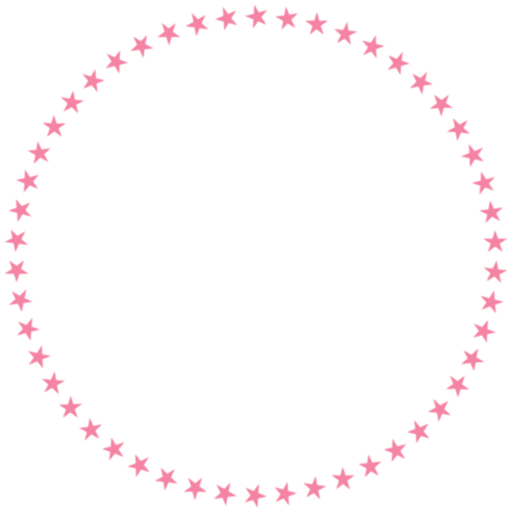

<!--
  Generated template for the QuizzypopWinnerPage page.

  See http://ionicframework.com/docs/components/#navigation for more info on
  Ionic pages and navigation.
-->
<ion-header>

  <ion-navbar color="quizzypop">
    <ion-title text-center="">Last Winner</ion-title>
  </ion-navbar>

</ion-header>


<ion-content class="no-scroll bg-img">

  <ion-grid style="height: 100%">
    <ion-row justify-content-center align-items-center style="height:100%">
      <ion-row justify-content-center >
        <h1 style="font-family: ClickerScript; font-size: 40px; font-weight: 600;">Congratulations!</h1>
      </ion-row>
      <ion-grid>
        <ion-row justify-content-center align-items-center>
          
          
          
        </ion-row>
      </ion-grid>
      <ion-row justify-content-center>
        <h4 style="margin-top: 25px;margin-bottom:0;font-family: Coda;">Thilina Prasad Jayathilaka</h4>
        <p style="margin-top: 0;font-family: Coda;">The <b>Winner</b> of the <b>QuizzyPop</b> month <b>{{winnerMonth}}</b></p>
      </ion-row>
    </ion-row>

  </ion-grid>

</ion-content>
